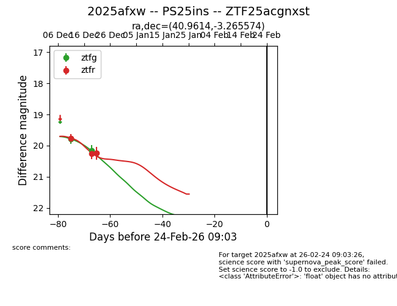
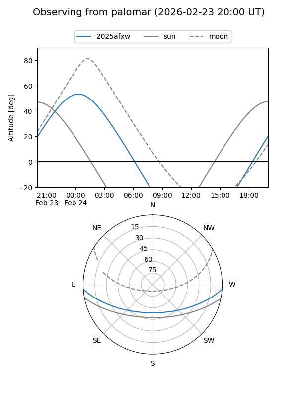
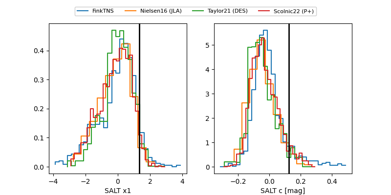

2025afxw
Target 2025afxw at 2025-12-30 20:03
Aliases and brokers:
FINK: fink-portal.org/ZTF25acgnxst
Lasair: lasair-ztf.lsst.ac.uk/objects/ZTF25acgnxst
ALeRCE: alerce.online/object/ZTF25acgnxst
TNS: wis-tns.org/object/2025afxw
YSE: ziggy.ucolick.org/yse/transient_detail/2025afxw
alt names
ZTF25acgnxst (ztf,fink_ztf)
2025afxw (tns,yse)
PS25ins (panstarrs)
Coordinates:
equatorial (ra, dec) = 40.9614,-3.26557
equatorial (HMS+DMS) = 02:43:50.73,-03:15:56.07
galactic (l, b) = (176.2049,-54.07332)
Flags:
Photometry:
last ztfg=20.16, ztfr=20.24
2 ztfg, 3 ztfr detections
Lightcurve

Visibility


Additional plots
